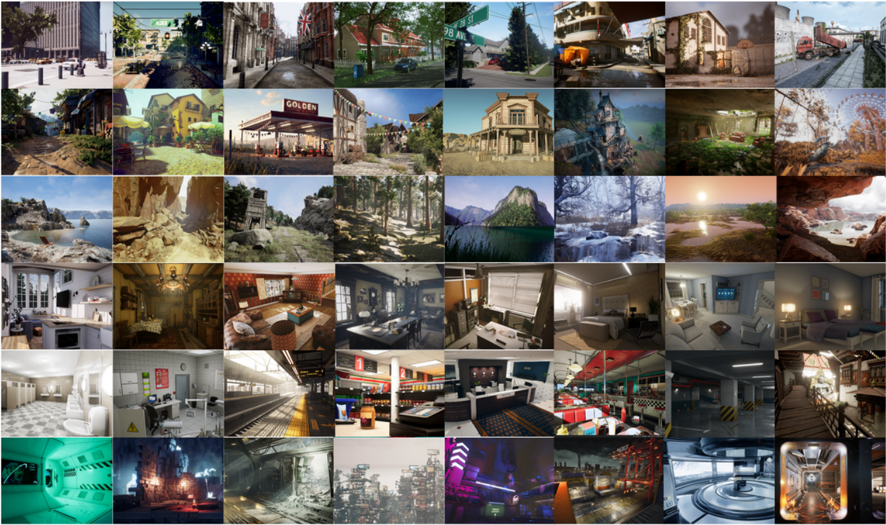

TartanAir Dataset Documentation
Install:
pip install tartanair
Welcome to TartanAir V2!
Let’s go on an adventure to beautiful mountains, to dark caves, to stylish homes, to the Moon 🚀, and to other exciting places. And there is more! You, your models, and your robots can experience these worlds via a variety of sensors: LiDAR, IMU, optical cameras with any lense configuration you want (we provide customizable fisheye, pinhole, and equirectangular camera models), depth cameras, segmentation “cameras”, and event cameras.

All the environments have recorded trajectories that were designed to be challenging and realistic. Can we improve the state of the art in SLAM, navigation, and robotics?